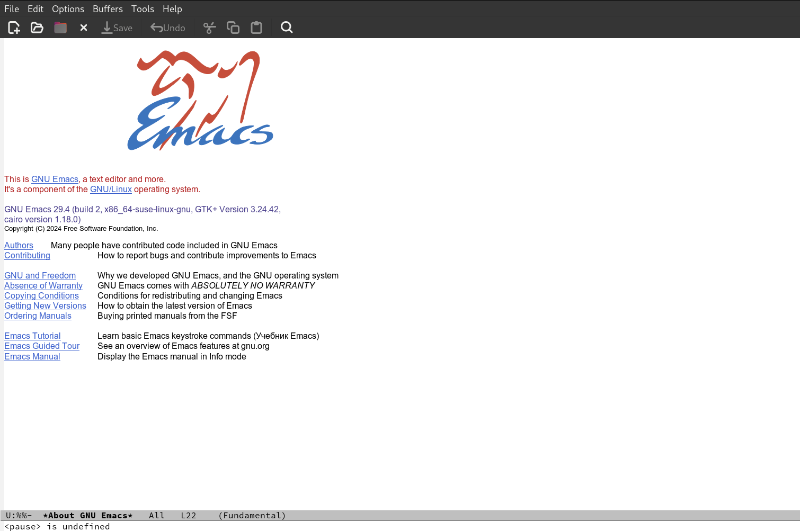
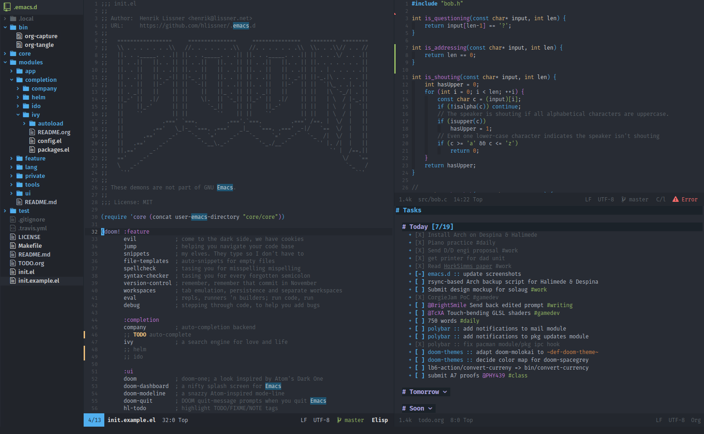
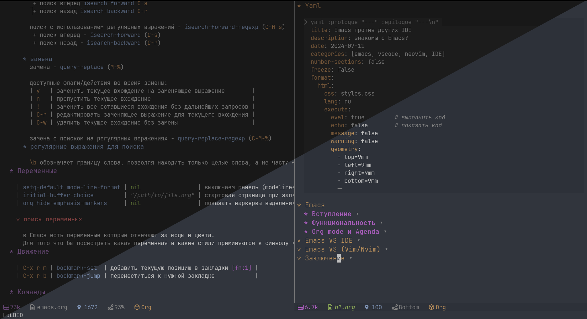

Emacs против других IDE
знакомы с Emacs?
Emacs
Вступление
Emacs - один из самых старых текстовых редакторов, выпущен 1985 году, помимо своего внушительного возраста этот редактор удивил меня своей разносторонностью и настраиваемостью.
Как может выглядеть такой древний софт?

Не очень привлекательно…
Но внеся изменения в файл конфигурации можно получить такой вид

Впрочем, это только визуалальная сторона, Emacs так же может удивить по функциональности
Функциональность
Emacs - это не просто текстовый редактор, у него есть терминал, браузер, файловый менеджер, менеджер задач, возможность просматривать изображения, pdf файлы… А еще есть org mode! И все это “из коробки”! Казалось бы, это не редактор, это контейнер с утилитами, он наверное долго грузиться и медленно работает? Запускается emacs за >0.1s! при этом потребляет ~30мб ОЗУ! Да… Умели раньше делать софт!
Конечно в этом есть подвох, это показатели “ванильного”, без настроек (вспомним первое фото поста), мой рабочий(настроенный) emacs запускается за ~0.45сек и потребляет ~90мб, сравните с популярными IDE
Ванильный Emacs представляет собой ядро на которое налаживаются пакеты и настройки для того что бы подстроить редактор под себя. Начиная от внешнего вида, заканчивая горячими клавишами.
Можно задаться вопросом, разве популярные IDE не дают возможность настроить hotkeys и темы? Да, дают, но в меру, очень быстро можно упереться в потолок. Emacs это GUI для языка Emacs Lisp, используя этот язык можно программировать сам Emacs, его поведение, реализовывать дополнительный функционал, это не просто визуальная настройка, это реализация недостающего функционала. Кто увлекается программированием, и не сторонник “IDE из коробки работает - мне этого хватает” - того Emacs может приятно удивить
Org mode и Agenda
У Emacs есть много режимов, вкратце затрагивал в разделе функциональность, но о 2х режимах расскажу немного больше.
Org mode - этот режим дает возможность писать наподобие markdown (по возможностям markdown это верхушка айсберга). В org mode можно использовать маркировки для выделения текста, ставить оглавления, вставлять блоки кода, таблицы, сноски, а так же можно экспортировать блоки кода в файл(ы) и экспортировать в другие форматы… Это очень мощный мод в котором я пишу конфигурации к приложениям.
Это уникальный подход, который дает удобно описывать (комментировать) вне блоков кода, а сам код экспортировать в нужный файл без комментариев.
Agenda - менеджер задач, который берет задачи из org файлов. Задачам можно назначить приоритет, статус, теги, можно настроить иерархию отображения, назначить scheduled и deadlaine, effort и множество других опций
Emacs VS IDE
Чем хуже Emacs в сравнении с популярными IDE (VSCode, JetBrains IDE’s и другими)
Если кратко, то хуже в удобстве из коробки. Современные IDE поставляют многое из коробки, а если в коробке нет то в расширениях в пару кликов все ставиться. В Emacs не всегда всё будет под руками, иногда нужно сходить в интернет и посмотреть какой нужен пакет, какие настройки.
Но у Emacs есть неоспоримый перевес, Emacs - это тектовый редактор, я его отношу к группе приложений Notepad++ и SublimeText, но с возможностью пакетами расширить функционал до полноценной IDE. Весь этот процесс перехода (TextEditor → IDE) и фильтр “что нужно включу, а что нет выключу” зависит от пользователя. Это дает существенный рост в оптимизации.
А такие инструменты как: макросы, регистры, шаблоны (пакет “yasnippet”) позволяют в некоторых направлениях существенно превосходить современные IDE.
Emacs VS (Vim/Nvim)
О это противостояние редакторов которое длится и по сегодняшнее время…
Стоит отметить основную разницу:
Vim/Nvim - это консольный текстовый редактор, он более шустрый на больших файлах, более легкий и если нужен только текстовый редактор/редактор кода то Nvim - будет хорошим выбором
Emacs - это GUI текстовый редактор (так же есть и консольный), он предоставляет возможность открывать файлы как проекты в отдельных буферах (на подобии как в OS открываем разные программы и переключаемся между ними, так же в Emacs можно переключаться между файлами/проектами), принося за собой богатую экосистему модов, сохраняя при этом хорошую производительность
Заключение
Я использовал VSCode, RStudio а так же Nvim но Emacs существенно увеличил мою продуктивность, его мощные режимы отточенные десятилетиями включают хороший функционал который работает без сюрпризов.
Множество пакетов, единая экосистема, высокая оптимизация и свободный код - ставит Emacs выше конкурентов
Как я использую Emacs:
Пишу на Python, R, Go, Quarto, к слову этот пост так же пишу в Emacs, пишу конфигурации в Org режиме, и часто бегаю по файлам в файловом менеджере Emacs!
Моя персональная база знаний pkm в Emacs (пакет org-roam и org-roam-ui), а так же использую agenda как менеджер задач, читаю книги в pdf в настроенной тёмной теме (не инвертированной, а настроенной цвет фона и текста в ручную, пакет pdf-tools, который дает возможность аннотировать).
Могу продолжать дальше…, но пусть эти “открытия” (в каких областях еще можно использовать Emacs) останутся для тех кто все же решиться его попробовать
И все это в одной программе, которая запускается за 0.45сек и занимает ~90мб!
Да… Умели раньше делать софт=)
Мой внешний вид Emacs (ночная / дневная тема)
